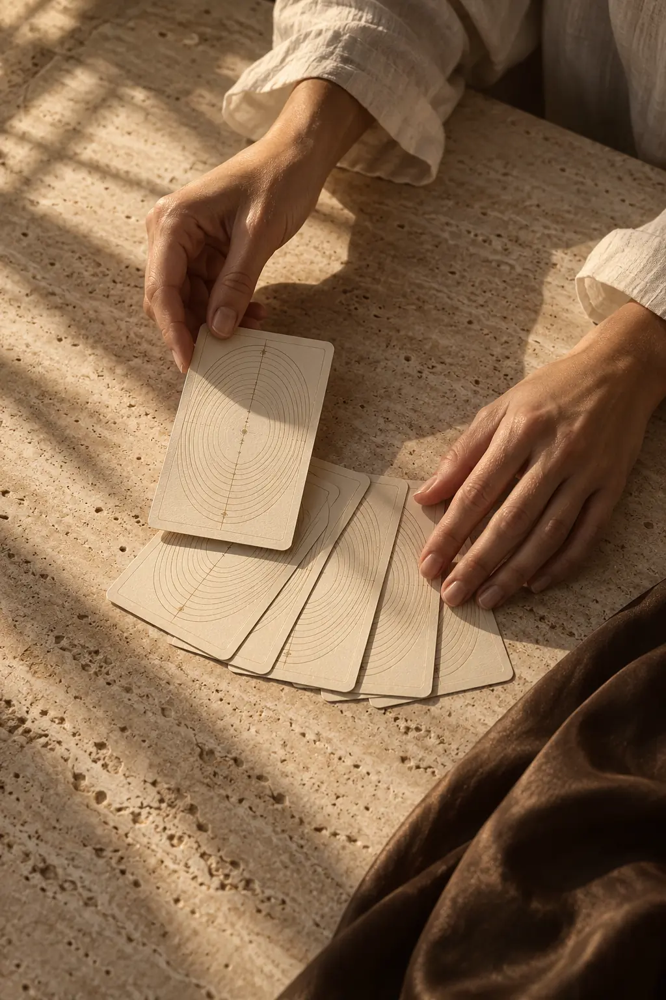

Искусство быть ближе к себе
Сначала —
к себе.
Карты, книга и небольшие практики,
чтобы увидеть свой вопрос яснее.

Новый взгляд.
01 / Твоя практика
Что хочется
прояснить?
Один вопрос или целая история. Выбери свою глубину — от карты дня до подробного исследования.
Ваш расклад
02 / Авторская книга
Карта
как зеркало
От первого образа — к собственному прочтению. Книга о том, как замечать детали, задавать вопросы и находить связь с личным опытом.
Знакомство с образами
Не нужно знать
всё заранее.
Рассмотри одну карту. Заметь деталь. Сохрани свою ассоциацию — и только потом загляни в толкование.


03 / Личный дневник
У твоих мыслей
есть своё место.
Сохраняй расклады, первые отклики и небольшие решения. Возвращайся позже, чтобы увидеть, что изменилось.
Записи остаются в этом браузере. Экспорт поможет сохранить отдельную копию.
У каждого вопроса — своя глубина.
Выберите расклад, чтобы начать.